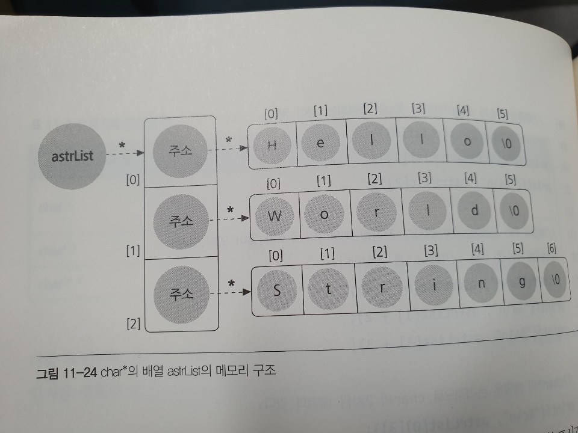
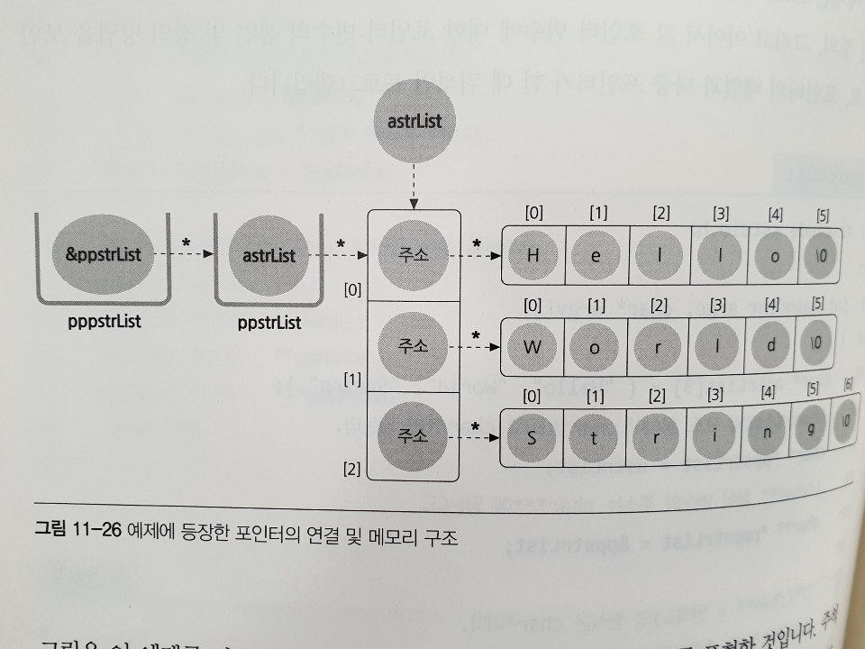
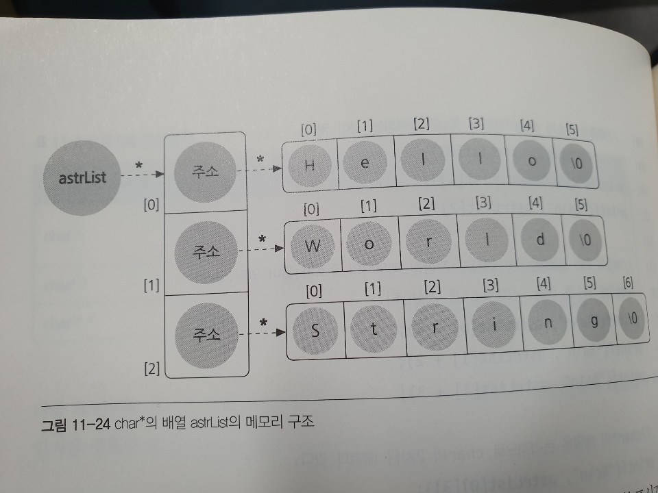
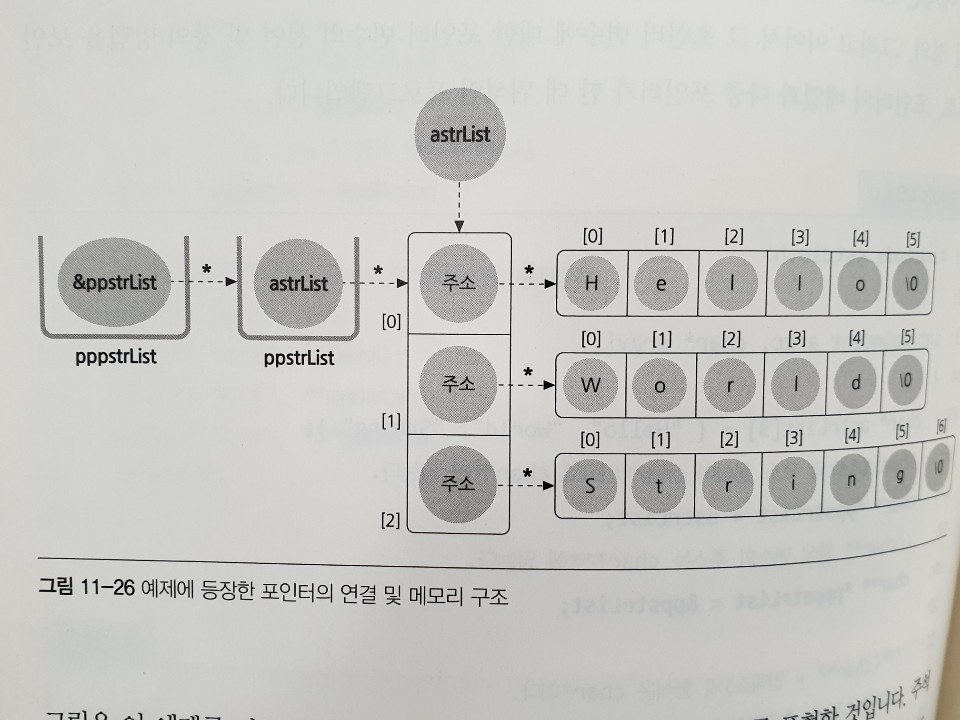
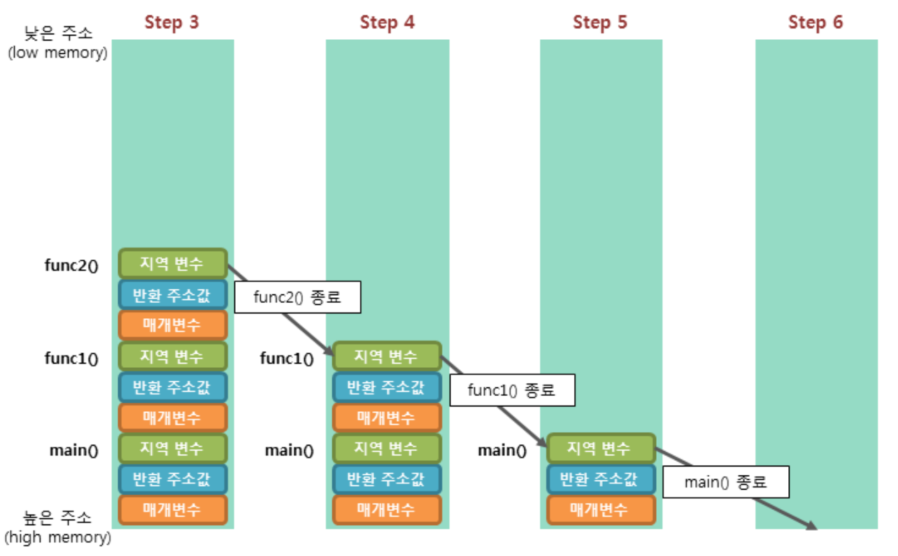
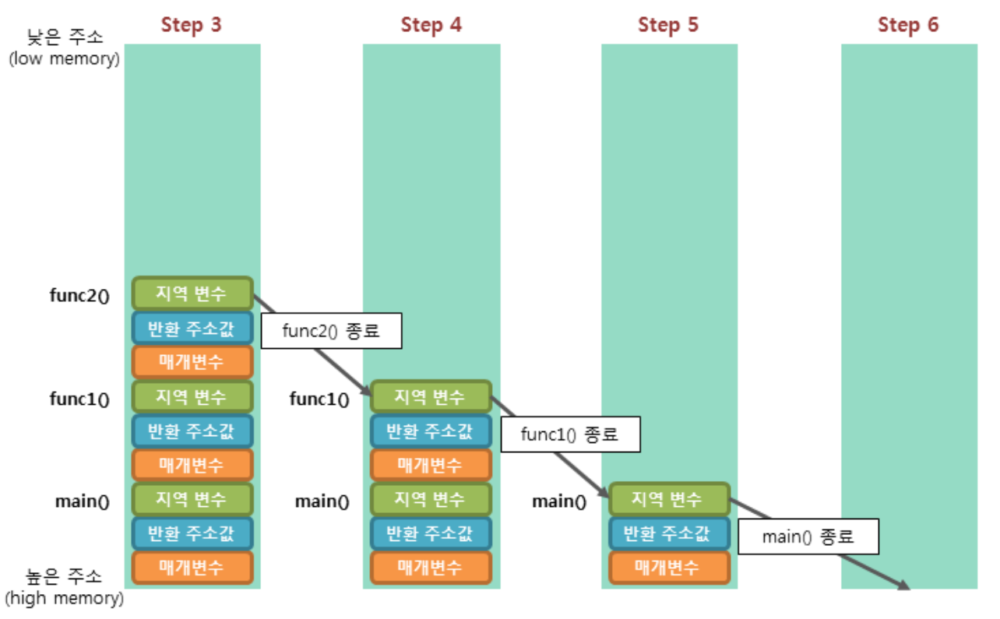

함수 응용
Call By Value : 매개변수가 값임
Call By Reference : 매개변수가 포인터로 사용됨.
Call by reference 방식이 Call by Value 에 비해 가장 다른 점은 주소를 통해 호출자 메모리에 접근할 수 있는 방법을 제시함으로써 두 함수가 좀더 강력하게 결합될 수 있다는 것입니다.
매개변수가 포인터일 때 포인터가 가리키는 대상 메모리의 크기를 인수로 받는 것은 보안적으로나 설계적으로 매우 중요합니다.
포인터의 가장 큰 문제는 가리키는 대상의 실제 크기를 포인터 자체만으로는 알 수가 없다는 점입니다. 피호출자 함수가 동적으로 할당한 메모리를 호출자 함수에서 해제 하는 특정이 있습니다. 메모리를 할당하는 함수와 해제하는 함수가 거의 대부분 달라질 것이기 때문에 아래의 예제를 잘이해 해야한다.
Call by reference를 이용한 교환 예제
문자열의 길이를 측정하는 기능
잘못된 주소 전달의 예
int Minus(int a, int b){
return a - b
}
// main 에서 호출 시
printf("%d\n", Minus(3,4));
Call By Reference : 매개변수가 포인터로 사용됨.
// 주소를 통해 호출자 메모리에 접근할 수 있는 방법
int Minus(int *a, int *b){
return *a - *b;
}
// main에서 x, y 값이 선언되어 있고 각 지역변수 x,y의 주소값을 인수로 지정
printf(%d\n, Minus(&x, &y));
Call by reference 방식이 Call by Value 에 비해 가장 다른 점은 주소를 통해 호출자 메모리에 접근할 수 있는 방법을 제시함으로써 두 함수가 좀더 강력하게 결합될 수 있다는 것입니다.
#include <stdio.h>
// 배열 실 인수는 '포인터' 매개변수로 받는다.
// 포인터에는 요소의 개수 정보가 없으므로 int 매개변수가 더 필요하다.
// 만일 입력 받아야 할 정수의 개수가 달라져도 이 함수 코드는 변하지 않는다.
void InitList(int *pList, int nSize){
int i = 0;
for ( i = 0 ; i < nSize; ++i){
printf("정수를 입력하세요. : ");
scanf("%d", &pList[i]);
}
}
// 요소가 int 형식인 배열이라면 요소의 개수와 상관 없이 정렬할 수 있다.
void SortList(int *pList, int nSize){
int i = 0, j = 0, nTmp = 0;
for ( i = 0 ; i < nSize -1 ; i ++){
for(j = i + 1; j < nSize; ++j ){
if(pList[j] < pList[i]){
nTmp = pList[j];
pList[j] = pList[i];
pList[i] = nTmp;
}
}
}
}
void PrintList(int *pList, int nSize){
int i = 0;
for ( i = 0 ; i < nSize ; ++i )
printf("%d\t", pList[1]);
putchar('\n');
}
int main(void){
// 자료구조를 지역변수로 선언했기 때문에
// 다른 함수에서는 직접 접근할 수 없다.
int aList[5] = { 0 }
InitList(aList, 5);
SortList(aList, 5);
PrintList(aList, 5);
return 0;
}
매개변수가 포인터일 때 포인터가 가리키는 대상 메모리의 크기를 인수로 받는 것은 보안적으로나 설계적으로 매우 중요합니다.
#include <stdio.h>
// 주소를 매개변수로 받을 때는 대상 메모리의 크기를 함께 받는 것이 좋다.
void GetName(char *pszName, int nSize){
printf("이름을 입력하세요. : ");
// 매개변수로 전달받은 주소를 다시 gets_s( ) 함수의 인수로 넘긴다.
gets_s(pszName, nSize);
}
int main(int argc, char* argv[])
{
char szName[32] = { 0 };
// 배열(주소)과 배열의 크기를 함수의 매개변수로 전달한다.
GetName(szName, sizeof(szName));
printf("당신의 이름은 %s 입니다. \n", szName);
return 0;
}
포인터의 가장 큰 문제는 가리키는 대상의 실제 크기를 포인터 자체만으로는 알 수가 없다는 점입니다. 피호출자 함수가 동적으로 할당한 메모리를 호출자 함수에서 해제 하는 특정이 있습니다. 메모리를 할당하는 함수와 해제하는 함수가 거의 대부분 달라질 것이기 때문에 아래의 예제를 잘이해 해야한다.
#include <stdio.h>
#include <stdlib.h>
// 주소를 반환하는 사용자 정의 함수 선업 및 정의
char* GetName(void){
char *pszName = NULL;
// 메모리를 동적으로 할당한다.
pszName = (char*)calloc(32, sizeof(char));
printf("이름을 입력하세요. :");
// 동적 할당된 메모리에 사용자가 입력한 문자열을 저장한다.
gets_s(pszName, sizeof(char)*32);
// 동적 할당한 메모리의 주소를 호출자 함수에 반환한다.
return pszName;
}
int main(int argc, char* argv[])
{
char *pszName = NULL;
// 이름이 저장된 동적 할당된 메모리의 주소를 반환받는다.
pszName = GetName();
printf("당신의 이름은 %s입니다.", pszName);
// 호출자 함수가 메모리를 해제해야 한다.
free(pszName);
return 0;
}
Call by reference를 이용한 교환 예제
#include <stdio.h>
// 매개변수로 주소를 받는다.
void Swap(int *pLeft, int *pRight){
// 주소를 가리키는 대상의 메모리 값을 교환한다.
int nTmp = *pLeft;
*pLeft = *pRight;
*pRight = nTmp;
}
int main(int argc, char* argv[]){
int x = 10, y = 20;
// 호출자 함수 안에 선언된 지역 변수의 주소를 전달한다.
// 따라서 함수가 반환한 후 x와 y의 값은 서로 교환된다.
Swap(&x, &y);
printf("%d %d\n", x, y);
return 0;
}
문자열의 길이를 측정하는 기능
#include <stdio.h>
// 매개변수로 전달된 문자열의 길이를 반환하는 함수
int GetLength(const char *pszParm)
{
int nLength = 0;
while ( pszParm[nLength] != '\0')
nLength++;
return nLength;
}
int main(int argc, char* argv[])
{
char *pszData = "Hello";
printf("%d\n", GetLength("Hi"));
printf("%d\n", GetLength(pszData));
return 0;
}
잘못된 주소 전달의 예
#include <stdio.h>
int* TestFunc(void){
int nData = 10;
// 함수가 반환되면 소멸할 자동 변수의 주소를 반환한다.
// 운영체제에 반환했거나 곧 사라질 메모리에 대한 주소를 반환하는 일은 없어야 합니다.
return &nData;
}
int main(int argc, char* argv[]){
int *pnResult = NULL;
pnResult = TestFunc();
// 포인터가 가리키는 대상 메모리는 유효하지 않은 메모리이다.
printf("%d\n" , *pnResult);
return 0;
}
자동 변수는 스택 영역 메모리를 사용합니다. 자동변수는 기억 부류 auto로 선언된 변수를 말하는데 별도로 명시하지 않은 모든 지역 변수는 모두 자동변수입니다.
함수의 매개변수 역시 자동변수이고 함수의 지역 변수입니다. 따라서 함수 내부에 선언된 변수와 매개변수는 기본적으로 '스택'을 사용합니다.
스택은 선형 자료구조의 일종으로 정보를 층층이 쌓아 올린 구조입니다.
스택과 메모리의 주소는 반대 방향을 그린다.
스택의 왼쪽에는 함수의 이름과 스코프의 시작 지점을 표시하고 오른쪽에서는 식별자 이름을 기술합니다. 우리가 작성하는 모든 예제들은 항상 main()함수에서 시작하므로 최초로 늘어난 스택은 main()함수에 속한 것으로 가정합니다. 그리고 그림에서 스택은 위로 증가합니다. 그러나 메모리리의 주소는 아래로 증가합니다. 따라서 메모리 주소가 증가 했다는 것은 스택이 들어들었음을 의미하고 주솟값이 작어졌다는 것은 스택의 증가를 의미한다고 생각할 수 있습니다.
스택은 선형 자료구조의 일종으로 정보를 층층이 쌓아 올린 구조입니다.
스택과 메모리의 주소는 반대 방향을 그린다.
스택의 왼쪽에는 함수의 이름과 스코프의 시작 지점을 표시하고 오른쪽에서는 식별자 이름을 기술합니다. 우리가 작성하는 모든 예제들은 항상 main()함수에서 시작하므로 최초로 늘어난 스택은 main()함수에 속한 것으로 가정합니다. 그리고 그림에서 스택은 위로 증가합니다. 그러나 메모리리의 주소는 아래로 증가합니다. 따라서 메모리 주소가 증가 했다는 것은 스택이 들어들었음을 의미하고 주솟값이 작어졌다는 것은 스택의 증가를 의미한다고 생각할 수 있습니다.
- 지역 변수는 선언된 순서대로 그린다.
- 포인터 변수는 별도로 표시한다.
#include <stdio.h> int main(int argc, char* argv[]){ int x = 10, y = 20; int *pnData = &x; // 포인터 변수는 간접 지정 대상이 어디인지 포인터가 가리키는 지점을 표시해야한다. *pnData = 100; return 0; } -
배열의 인덱스는 아래로 증가하게 그린다.
배열의 인덱스는 주소가 증가하는 방향으로 표시해야합니다. 배열의 이름은 '주소상수' 이므로 그자체가 스택에 Push되지 앟는다는 사실에 주의합니다. -
동적할당된 메모리는 따로 표시한다.
메모리를 동적할당하거나, 정적 영역을 사용하는 병수가 등장한다면 이는 스택 영역이 아니라 별도로 그려서 표시해야한다.#include <stdio.h> #include <stdlib.h> #include <string.h> int main(int argc , char* argv[]) { int nData = 10; char *pszBuffer = NULL; pszBuffer = (char*)malloc(12); strcpy(pszBuffer, "Hello"); free(pszBuffer); retur 0; } -
매개변수는 오른쪽부터 스택에 그리며 새 스코프는 기존 스택 위에 그린다.
만일 main()함수가 다른 사용자 정의함수를 호출할 경우에는 매개변수도 스택에 그려야 하는데 반드시 오른쪽 매개변수부터 먼저 push 하는 것으로 그립니다.
#include <stdio.h> int Add(int a, int b) { int nResult = 0; nResult = a + b; return nResult; } int main(int argc, char* argv[]) { int nResult = 0; nResult = Add(3,4); return 0; }
#include <stdio.h>
int main(void){
char szBuffer[12] = { "TestString" };
char *pszData = "TestString";
// 다음 코드들은 두 문자열이 같은지 비교하는 것이 아니라
// 문자열이 저장된 메모리의 위치가 같은지 비교하는 것이다.
// 단지 주소가 같은 주소인지 비교하는 것에 불과하다.
printf("%d\n", szBuffer == pszData);
printf("%d\n", "TestString" == pszData);
printf("%d\n", "DataString" == "TestString");
return 0;
}
#include <stdio.h>
int main(void){
char szBuffer[12] = { "TestString" };
char *pszData = "TestString";
// 다음 코드들은 주소와 상관 없이 대 상 메모리에 저장된
// 문자열이 같은지 비교한다.
// 만일 길이가 다르면 무조건 같은 문자열이 아니다.
printf("%d\n", strcmp(szBuffer,pszData));
printf("%d\n", strcmp("TestString",pszData));
printf("%d\n", strcmp("DataString","TestString"));
return 0;
}
#include <stdio.h>
#include <string.h>
int main(void)
{
char szBuffer[32] = { "I am a boy."};
// 배열의 주소를 출력한다.
printf("%p\n", szBuffer);
// 대상 문자열에서 문자열을 검색하고 찾은 위치(주소)를 출력한다.
printf("%p\n", strstr(szBuffer, "am"));
printf("%p\n", strstr(szBuffer, "boy"));
// 문자열이 검색된 위치에서 기준이 되는 주소를 빼면
// 인덱스를 계산할 수 있다.
// strstr() 함수가 검색에 성공했을 때 반환하는 메모리의 첫 주소는 첫 번째 인수로 전달된 메모리의 주소보다 값이 더 큰 숫자라는 것
printf("Index : %d\n", strstr(szBuffer, "am") - szBuffer);
printf("Index : %d\n", strstr(szBuffer, "boy") - szBuffer);
return 0;
}
1차원 배열을 포인터 관점에서 설명하면 기준 주소에서 일정 인덱스 만큼 떨어진 상대 주소를 배열 요소의 변수로 지정하는 연산이라고 할 수 있다.
*(기준 주소 + 인덱스)나 기준주소[인덱스] 나 동일하다는 의미이다.

*(기준 주소 + 인덱스)나 기준주소[인덱스] 나 동일하다는 의미이다.
#include <stdio.h>
#include <string.h>
int main(void){
char szBuffer[32] = { "You are a girl." };
// 배열의 첫 번째(0번) 요소의 값을 %c 형식으로 출력한다.
printf("%c\n", szBuffer[0]);
// 0번 요소에 대한 주소인 배열의 이름(주소)에 대해 간접 지정 연산을
// 수행하고 그 안에 담긴 정보를 출력한다.
printf("%c\n", *szBuffer);
// 0을 더하더라도 주소는 달라지지 않는다.
printf("%c\n", *(szBuffer + 0));
// 배열 연산자는 '기준주소 + 인덱스' 연산 결과로 얻은 주소를
// 간접지정하는 것과 같다.
printf("%c\n", szBuffer[5]);
printf("%c\n", *(szBuffer + 5));
// 주소 연산(&)은 간접지정 연산과 상반된다.
// 그러므로 아래 세 줄의 코드는 모두 같다.
// printf 함수는 %s와 대응된 인수를 메모리의 주소로 보고 거기서 한 글자씩 0이 나올 때 까지 읽어와 하나의 완성된 문자열로 출력합니다.
printf("%s\n", &szBuffer[4]);
printf("%s\n", &*(szBuffer + 4));
printf("%s\n", szBuffer + 4);
return 0;
}
#include <stdio.h>
#include <malloc.h>
#include <string.h>
int main(void){
char *pszBuffer = NULL, *pszNewBuffer = NULL;
pszBuffer = (char*)malloc(12);
springf(pszBuffer, "%s", "TestString");
// 동적할당 메모리의 주소, 크기, 저장된 문자열 등을 출력한다.
printf("[%p] %d %s \n", pszBuffer, _msize(pszBuffer), pszBuffer );
// 12바이트의 메모리를 32바이트로 '확장'을 시도한다.
// realloc이 아예 실패하는 경우, 예를 들어 너무 큰 크기의 메모리로 확장을 시도하여 운영체제로서는 늘려주는 것이 아예 불가할 수 있습니다.
// 이 경우 realloc() 함수는 NULL을 반환하며, 첫 번째 인수로 전달됨 메모리를 해제해주지도 않습니다.
// 동적할 할당하는 메모리가 사실 내부적으로는 일정 크기의 덩어리로 관리되기 때문입니다.
pszNewBuffer = (char*)realloc(pszBuffer, 32);
if ( pszNewBuffer == NULL)
free(pszBuffer);
// 문자열을 덮어쓰고 주소, 메모리 크기, 저장된 내용을 확인한다.
sprintf(pszNewBuffer, "%s", "TestStringData");
printf("[%p] %d %s\n", pszNewBuffer, _msize(pszNewBuffer), pszNewBuffer );
free(pszNewBuffer);
return 0;
}
#include <stdio.h>
#include <stdlib.h>
int main(void){
char *pszBuffer = NULL;
pszBuffer = (char*)malloc(12);
// 만일 12바이트 이상 쓰기가 발생하면 동적 할단된 메모리 단편이 훼손됩니다.
// 그러나 그 훼손 사실이 확인되는 것은 메모리가 반환될 때입니다.
gets(pszBuffer);
puts(pszBuffer);
// 오류 확인을 위해서 의도적으로 해제하지 않음
// free(pszBuffer);
retunr 0;
}
포인터가 좀 어려운 이유는 포인터 그 차제도 '변수(메모리)'라는 사실 때문입니다. 변수는 메모리이고 메모리는 관리 목적의 고유 번호, 즉 주소가 부여되어 있습니다.
일반 변수의 경우, 이름, 주소 그 안에 저장된 정보 이 셋이 매우 명확하게 구별됩니다. 그러나 포인터는 변수 자체의 주소와 변수에 저장된 주소, 이렇게 두 개의 주소가
공존하기 때문입니다.

다중 포인터가 등작하는 흔한 이유는 '포인터의 배열' 때문입니다. 포인터 배열이란 배열의 요소가 포인터 변수 인 경우를 말합니다. char 형 배열은 문자(배)열 일수 있습니다. 그리고 배열은 0 번 요소의 주소로 식별 됩니다. 그러므로 배열을 식별하는 주소는 배열(char[5])을 이루고 있는 요소 자료형(char)에 대한 포인터(char*)에 담습니다.

주소 연산과 간접 지정 연산은 서로 정반대되는 개념의 연산자입니다. 만일 이 두 연산자가 괄호 안이나 밖에서 연속될 경우 무시할 수 있습니다. 예를 들어, char* astrList[3]가 선언되었고, &astrList[1] 이라는 연산이 수행되었다면 이 연산결과의 자료형은 char**가 됩니다. '&astrList[1]'을 풀어서 쓰면 &*(astrList + 1) 입니다. 이때, '&*' 는 서로 상쇄 됩니다. 따라서 그냥 astrList + 1 이라고 한 것과 똑같습니다. 그리고 astrList의 자료형은 char* [3] 혹은 char** 이므로 '&astrList[1]'의 자료형은 char** 로 볼 수 있습니다.
다중 포인터

다차원 배열에 대한 포인터
배열은 여러 요소가 모여 한 덩어리를 이룬 것입니다. 그런데 만일 배열을 이룬 요소가 다시 배열이면 이를 2차원 배열이라 부릅니다. 그러니까 2차원 배열이라는 것은 정확히 말해 요소가 배열인 배열입니다. 그리고 배열의 식별자인 주소를 저장할 수 있는 포인터 변수는 '배열 요소의 자료형에 대한 포인터' 입니다. 그러므로 char[3][16] 배열은 char[16]가 요소이고 개수가 3인 배열이며, char[3][16] 배열의 식별자 주소를 담을 수 있는 포인터변수는 char[16] *라 할 수 있습니다.
변수와 메모리
변수의 본질은 메모리입니다. 개념적으로는 주기억 장치 메모리를 의미합니다. 그 중에 우리가 사용할 수 있는 메모리는 스택, 힙, 텍스트, 데이터 영역의 메모리입니다. 보통 변수를 선언한다는 것은 함수 내부에 속한 지역 변수를 의미하며, 지역 변수는 기본적으로 네 종류의 메모리 중에서도 스택(stack) 영역입니다.
변수를 선언할 때 자료형 앞에 기억부류(Storage-class)를 명시하는 예약어를 기억부류 지정자(storage-class specifier)라 합니다. C 언어의 기억 부류 지정자로 기술할 수 있는 예약어에는 extern, auto, static, register 등이 있는데, 각각 외부, 자동, 정적, 레지스터라고 부릅니다. '레지스터'는 일반 메모리가 아니라 CPU가 가진 메모리입니다.
전역 변수 혹은 정적 변수가 사용하는 데이터 영역의 메모리는 프로그램이 시작될 때 확보되어 종료될 때까지 그대로 유지됩니다.
다중 포인터가 등작하는 흔한 이유는 '포인터의 배열' 때문입니다. 포인터 배열이란 배열의 요소가 포인터 변수 인 경우를 말합니다. char 형 배열은 문자(배)열 일수 있습니다. 그리고 배열은 0 번 요소의 주소로 식별 됩니다. 그러므로 배열을 식별하는 주소는 배열(char[5])을 이루고 있는 요소 자료형(char)에 대한 포인터(char*)에 담습니다.
#include <stdio.h>
int main(void) {
char *astrList[3] = { "Hello", "World", "String" };
// 배열의 요소가 char* 이므로 %s로 출력하는 것이 맞다.
// astrList의 자료형을 기술하면 char* [3] 입니다. 그런데 이것을 다시 풀어쓰면 *(배열 요소에 대한 포인터 + 인덱스)가 됩니다. 따라서 *(char** + int) 로 생각할 수 있습니다.
// 괄호속 연산 ( char** + int )은 상대주소 계산 연산이며, 연산결과는 주소 char**입니다. 그러므로 char* 배열의 주소를 담을 수 있는 포인터 변수의 자료형은 char** 입니다.
printf("%s\n", astrList[0]);
printf("%s\n", astrList[1]);
printf("%s\n", astrList[2]);
// 배열의 0번 요소에는 첫 글자가 저장된 메모리의 주소가 들어 있다.
// 여기에 정수를 더해 '상대주소'를 계산한다.
// astrList[정수인덱스] 형식인데, astrList 를 char* 의 배열 혹은 char** 로 볼 수 있습니다. 따라서 astrList에 대해 배열 연산을 한번만 수행하면,
// 즉, 간접 지정 연산을 한 번만 수행하면 결과적으로 *(char**) 형식의 연산이 되고,
// 괄호 안과 밖에 있는 '*'를 하나씩 지우면 char*가 됩니다.
printf("%s\n", astrList[0] + 1);
printf("%s\n", astrList[1] + 2);
printf("%s\n", astrList[2] + 3);
// char* 의 배열은 논리적으로 char의 2차원 배열과 같다.
// char ** 에 간접지정 연산을 두 번 수행 한 것과 같습니다. 즉 **(char**)가 되는 것입니다.
// 따라서 최종 결과 자료형은 char 입니다. 당연히 %c 형식으로 출력해야 맞습니다.
// 좀더 자세히 설명하자면, astrList[1][3]을 풀어서 표시하면 *(*(astrList + 1) + 3) 입니다.
printf("%s\n", astrList[0][3]);
printf("%s\n", astrList[1][3]);
printf("%s\n", astrList[2][3]);
}
1차원 구조의 자료형 두 종류가 묶여서 논리적인 2차원 구조가 만들어졌다는 특징이 있음

#include <stdio.h>
int main(int argc, char* argv[]){
int i = 0;
for(i = 0 ; i < argc ; i ++)
puts( argv[i] );
puts("End");
return 0;
}
주소 연산과 간접 지정 연산은 서로 정반대되는 개념의 연산자입니다. 만일 이 두 연산자가 괄호 안이나 밖에서 연속될 경우 무시할 수 있습니다. 예를 들어, char* astrList[3]가 선언되었고, &astrList[1] 이라는 연산이 수행되었다면 이 연산결과의 자료형은 char**가 됩니다. '&astrList[1]'을 풀어서 쓰면 &*(astrList + 1) 입니다. 이때, '&*' 는 서로 상쇄 됩니다. 따라서 그냥 astrList + 1 이라고 한 것과 똑같습니다. 그리고 astrList의 자료형은 char* [3] 혹은 char** 이므로 '&astrList[1]'의 자료형은 char** 로 볼 수 있습니다.
다중 포인터
#include <stdio.h>
int main(int argc, char* argv[])
{
char ch = 'A';
// char* 에는 char 형의 주소를 담는다.
char *pData = &ch;
// char** 에는 char* 형의 주소를 담는다.
char* *ppData = &pData;
// char*** 에는 char** 형의 주소를 담는다.
char** *pppData = &ppData;
// 아래 코드들은 모두 char 형식을 %c로 출력한다.
printf("%c\n", ch);
printf("%c\n", *pData);
printf("%c\n", **ppData);
printf("%c\n", ***pppData);
return 0;
}
포인터도 변수이고 모든 변수는 주소를 가졌다.
그리고 포인터 변수를 선언할 때 'char*이름', 'char *이름', 'char * 이름' 이 가운데 어떤 식으로 해도 상관 없습니다.
중간에 존재하는 공백은 전혀 의미가 없기 때문입니다.
#include <stdio.h>
int min(int argc, char* argv[])
{
char* astrList[3] = { "Hello", "World", "String"};
// astrList의 요소 형식이 char* 이므로 char** 에 담는다.
char* *ppstrList = astrList;
// char** 형식 변수의 주소는 char***에 담는다.
char** *pppstrList = &ppstrList;
// *(char** + 인덱스)의 형식은 char* 이다.
// 따라서 %s로 출력하거나 puts( ) 로 출력한다.
puts(ppstrList[0]);
puts(ppstrList[1]);
puts(ppstrList[2]);
// char***를 두 번 간접지정하면 char* 이다.
// *pppstrList[0]에서 가장 먼저 수행되는 것은 간접 지정 연산이 아니라 배열 열산입니다. 이것을 풀어서 표시하면
// **(pppstrList + 0)이 됩니다. pppstrList + 0 연산 결과 자료형은 char*** 이므로 여기에 두번 간접 지정한 결과는 char* 가 됩니다.
puts(*pppstrList[0]);
puts(*(*(pppstrList + 0) + 1));
return 0;
}

다차원 배열에 대한 포인터
배열은 여러 요소가 모여 한 덩어리를 이룬 것입니다. 그런데 만일 배열을 이룬 요소가 다시 배열이면 이를 2차원 배열이라 부릅니다. 그러니까 2차원 배열이라는 것은 정확히 말해 요소가 배열인 배열입니다. 그리고 배열의 식별자인 주소를 저장할 수 있는 포인터 변수는 '배열 요소의 자료형에 대한 포인터' 입니다. 그러므로 char[3][16] 배열은 char[16]가 요소이고 개수가 3인 배열이며, char[3][16] 배열의 식별자 주소를 담을 수 있는 포인터변수는 char[16] *라 할 수 있습니다.
#include <stdio.h>
int main(int argc, char* argv[])
{
char astrList[2][12] = { "Hello", "World" };
// 아래의 코드는 잘못됨
// char* *pstrList[12] = astrList;
// 아래의 코드가 맞음 : 배열의 요소 자료형에 대한 포인터에 담는다.
char (*pstrList)[12] = astrList;
puts(pstrList[0]);
puts(pstrList[1]);
return 0;
}
변수와 메모리
변수의 본질은 메모리입니다. 개념적으로는 주기억 장치 메모리를 의미합니다. 그 중에 우리가 사용할 수 있는 메모리는 스택, 힙, 텍스트, 데이터 영역의 메모리입니다. 보통 변수를 선언한다는 것은 함수 내부에 속한 지역 변수를 의미하며, 지역 변수는 기본적으로 네 종류의 메모리 중에서도 스택(stack) 영역입니다.
변수를 선언할 때 자료형 앞에 기억부류(Storage-class)를 명시하는 예약어를 기억부류 지정자(storage-class specifier)라 합니다. C 언어의 기억 부류 지정자로 기술할 수 있는 예약어에는 extern, auto, static, register 등이 있는데, 각각 외부, 자동, 정적, 레지스터라고 부릅니다. '레지스터'는 일반 메모리가 아니라 CPU가 가진 메모리입니다.
#include<stdio.h>
int main(int argc, char* argv[])
{
auto int aList[3] = { 10, 20, 30};
auto int i = 0;
for(i = 0; i < 3; ++i){
printf("%d\t", aList[i]);
}
return 0;
}
전역 변수 혹은 정적 변수가 사용하는 데이터 영역의 메모리는 프로그램이 시작될 때 확보되어 종료될 때까지 그대로 유지됩니다.
-
정적 변수 static
정적 변수는 전역 변수 처럼 선언될 때 단 한 번만 초기화 됩니다. 그리고 함수가 반환해도 (메모리가 사라지지 않으므로) nData 변수는 전역변수처럼 그대로 존재합니다.#include <stdio.h> int TestFunc(void) { // 접근성은 TestFunc() 내부로 제한된 지역변수이나 // 기억 부류는 스택이 아니라 데이터 영역인 '정적' 변수 선언 및 정의 // 정의는 이 함수가 여러 번 호출되더라도 단 한번만 적용된다. static int nData = 10; ++nData; return nData; } int main(int argc, char* argv[]) { printf("%d\n", TestFunc()); printf("%d\n", TestFunc()); printf("%d\n", TestFunc()); return 0; } -
레지스터 변수 register
레지스터 변수는 CPU의 레지스터를 사용하기 위한 것인데, 이는 과거 주기억 장치의 속도가 비교적 느리던 시절에 사용되었다. 레지스터 변수는 CPU의 일부이므로 별도로 주소가 없습니다.#include <stdio.h> int main(int argc, char* argv[]){ register int i = 0; printf("%d\n", i ); printf("%d\n", &i ); // 해당 부분은 에러가 발생한다. return 0; }
-
void * malloc(size_t size)
인자 : 할당 받을 메모리의 바이트 단위 크기
반환값 : 힙 영역에 할당된 메모리 덩어리중 첫번째 바이트 메모리의 주소 , 에러가 발생하면 NULL 반환
설명 : 할당받은 메모리는 반스디 free() 함수를 이용하여 반환해야 하며, 메모리를 초기화하려면 memset() 함수를 이용해야 한다. 기본적으로는 쓰레기 값이 들어 있따. -
void free(void *memblock);
인자 : 반환할 메모리 주소
반환값 : 없음
설명 : 동적으로 할당받은 메모리를 운영 체제에 반환하는 함수 -
void *memset(void *dest, int c, size_t count);
인자
dest : 초기화할 대상 메모리 주소
c : 초깃값, 이 값이 0이면 메모리를 0으로 초기화
count : 초기화 대상 메모리의 바이트 단위 크기
반환값 : 대상 메모리 주소
설명 : 동적으로 할당받은 메모리에는 쓰레기 값이 있으므로 일반적으로 0으로 초기화하여 사용한다. -
void *calloc(size_t num, size_t size);
인자
num : 요소의 개수
size : 각 요소의 바이트 단위 크기
반환 값 : 힙 영역에 할당된 메모리 덩어리 중 첫 번째 메모리 바이트 메모리의 주소
할당된 메모리의 크기는 num 인자와 size 인자의 값을 곱한 크기
에러가 발생하면 NULL 반환
설명 : 이 함수는 malloc()함수와 달리 할당 받은 메모리를 0으로 초기화하여 전달한다. 할당받은 메모리는 반드시 free() 함수를 이용하여 반환해야 한다. -
void *strcpy(void *strDestination, const char *strSource);
인자
strDestination : 문자열이 복사되어 저장될 메모리 주소
strSource : 원본 문자열이 저장된 메모리의 주소
반환값 : strDestination 인자로 주어진 주소 반환
설명 : 문자열의 길이를 계산하여 원본의 크기만큼 대상 메모리에 복사하는 함수 -
void *strcpy(void *strDestination, const char *strSource, size_t count);
인자
strDestination : 문자열이 복사되어 저장될 메모리 주소
strSource : 원본 문자열이 저장된 메모리의 주소
count : 복사할 문자열의 길이
반환값 : strDestination 인자로 주어진 주소 반환
설명 : count 인수로 주어진 길이만큼 대상 메모리에 복사하는 함수 -
void *memcpy(void *dest, const void *src, size_t count);
인자
dest : 대상 메모리의 주소
src : 복사할 원본 데이터가 저장된 메모리 주소
count : 복사할 메모리의 바이트 단위 크기
반환값 :대상 메모리 주소
설명 : 특정 주소로 시작하는 일정 길이의 메모리에 저장된 값을 대상 메모리에 그대로 복사해준다. -
void memcmp(const void *buf1, const void *buf2, size_t count );
인자
buf1 : 비교 원본 메모리 주소
buf2 : 비교 대상 메모리 주소
count : 비교할 메모리의 바이트 단위 크기
반환값 : 결과가 0 이면 두 값은 같음, 0보다 크면 buf1이 buf2보다 더큼, 0보다 작으면 buf2가 buf1보다 더 큼. 단, 뺄셈 연산을 수행할 때 unsigned char형으로 처리. 따라서 -1은 255로 처리
설명 : 첫 번째 인자로 전달된 주소의 메모리에 저장된 값에서 두 번째 인자로 전달된 주소에 저장된 메모리의 값을 빼서 두 값이 같은지 비교한다. 즉, 주어진 길이 만큼 두 모메리를 비교하는 함수 이다. -
int strcmp(const char *string1, const char *string2);
인자
string1 : 비교할 문자열이 저장된 메모리 주소
string2 : 비교할 문자열이 저장된 메모리 주소
반환값 : 두 문자열이 같다면 0 반환, 만일 0보다 큰수를 반환하면 string1이 string2 보다 알파벳 순서상 나중이고, 0보다 작으면 string2가 나중임을 의미
설명 : 대소문자를 식별하여 두 문자열이 같은지를 비교하는 함수 -
char *strstr(const char *string, const char *strCharSet);
인자
string : 검색 대상이 될 문자열이 저장된 메모리 주소
strCharSet : 검색할 문자열이 저장된 메모리 주소
반환 값 : 문자열을 찾으면 해당 문자열이 저장된 메모리 주소 반환, 찾지 못하면 NULL 반환
설명 : 임의의 대상 문자열에서 특정 문자열을 검색하는 함수 -
void *realloc(void *memblock, size_t size)
인자
memblock : 기존에 할당된 메모리 주소, 만일 이 주소가 NULL이면 malloc() 함수와 동일하게 동작
size : 다시 할당받을 메모리의 바이트 단위 크기
반환 값 : 다시 할당된 메모리 덩어리 중 첫 번째 바이트의 메모리 주소, 만일 다시 할당하는 데 실패하면 NULL 반환, 이 경우 첫번째 인자로 전달된 메모리를 수동으로 해제해야함
설명 : 만일 이미 할당된 메모리 영역에서 크기를 조정할 수 있다면, 반환된 주소는 첫 번째 인자로 전달된 주소와 같다. 그러나 불가능하다면 기존의 메모리를 해제하고 새로운 영역에서 다시 할당한 후, 새로 할당된 메모리의 주소를 반환한다. -
int sprintf(char *buffer, const char *format [, argument] ...);
인자
buffer : 출력 문자열이 저장될 메모리 주소
format : 형식 문자열이 저장된 메모리 주소
[, argument ] : 형식 문자열에 대응하는 가변 인자들
반환 값 : 출력된 문자열의 개수
설명 : 형식 문자열에 맞추어 특정 메모리에 문자열을 저장하는 함수
메모리의 스택(stack) 역역은 함수의 호출과 관계되는 지역 변수와 매개변수가 저장되는 영역입니다. 스택 영역은 함수의 호출과 함게 할당되며, 함수의 호출이 완료되면 소멸합니다.
함수가 호출되면 스택에서는 함수의 매개변수, 호출이 끝난뒤 돌아갈 반환 주소 값, 함수에서 선언된 지역 변수등이 저장됩니다.
이렇게 스택 영역에 차례대로 저정되는 함수의 호출 정보를 스택 프레임(Stack Frame)이라고 합니다.


